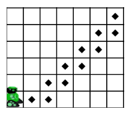
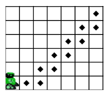
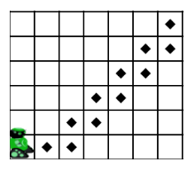
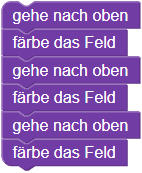

Treppe malen

 

Programmiere den Roboter:
Der Roboter soll die markierten Felder färben.
Benutze dafür
den Baustein wiederhole, der
die Wiederholungsanweisung for, die
dir erlaubt, eine oder mehrere Anweisungen mehrfach hintereinander auszuführen.
Statt zum Beispiel dreimal die gleichen zwei Bausteine zu verwenden,

kannst du den Baustein wiederhole 3 mal verwenden:

Um die Anzahl der Wiederholungen zu ändern, kannst du auf die Zahl im Baustein klicken und eine neue Zahl mit der Tastatur eingeben.
Statt zum Beispiel dreimal die gleichen zwei Befehle zu schreiben:
oben() bemale() oben() bemale() oben() bemale()
benutze die Wiederholungsanweisung for:
for loop in range(3):
oben()
bemale()
Die Zahl in der Klammer gibt die Anzahl der Wiederholungen an. Alle Befehle, die in der Wiederholungsanweisung ausgeführt werden sollen, müssen eingerückt werden.